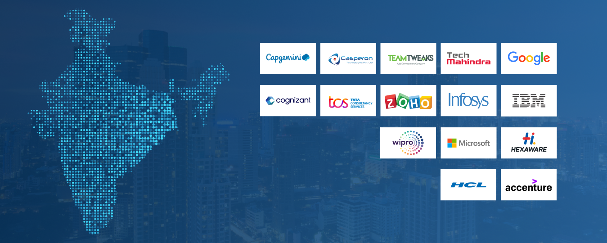

Discover India's Leading IT Companies

Discover India's Leading IT Companies
India has become one of the world's leading destinations for information technology and software development. Cities like Chennai, Bangalore, and Hyderabad are home to numerous multinational companies, startups, and software service providers. These companies develop innovative technologies, provide IT consulting, cloud computing, artificial intelligence, cybersecurity, and digital transformation solutions for businesses around the world.
Welcome! The Indian IT sector is a massive hub of digital innovation, employing millions. Whether you are a job seeker looking for an employee welcome kit, a new hire trying to read your welcome message, or a business looking for software development partners, you are in the right place.
The Indian IT and ITeS industry is home to over 600,000 global delivery centers and houses about 65% of the world's digital talent.
This website introduces some of the top IT companies located in India's major technology cities.
Chennai is one of India's fastest-growing IT hubsThe city is home to several multinational software companies, technology parks, and engineering professionals. It is well known for software development, business process outsourcing (BPO), and IT consulting services.
View Chennai CompaniesBangalore is popularly known as the Silicon Valley of India.It is home to thousands of startups and global technology companies. The city is recognized for innovation, software engineering, cloud computing, and research.
View Banglore ComapaniesHyderabad has become one of India's largest technology centers.It attracts multinational companies due to its excellent infrastructure, skilled workforce, and modern IT parks.
View Hydrabad Companies